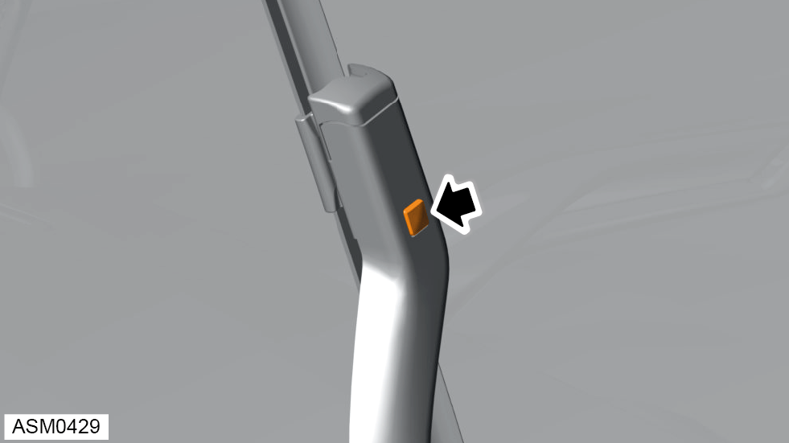
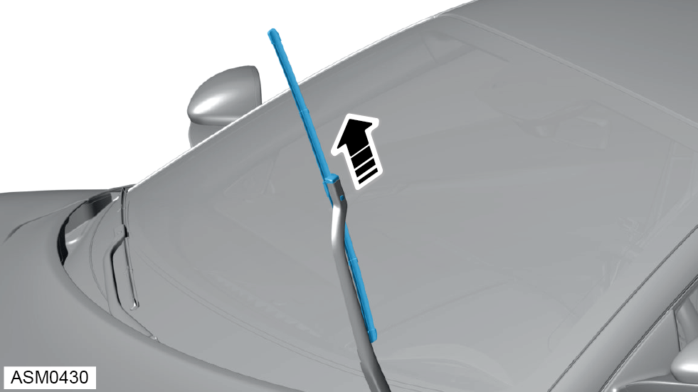

Removal
 CAUTION: Do not release wiper arm suddenly or damage can occur to windscreen.
CAUTION: Do not release wiper arm suddenly or damage can occur to windscreen.


CAUTION: Do not release wiper arm suddenly or damage can occur to windscreen.
CAUTION: Carefully lower wiper arm to prevent damage to windscreen.